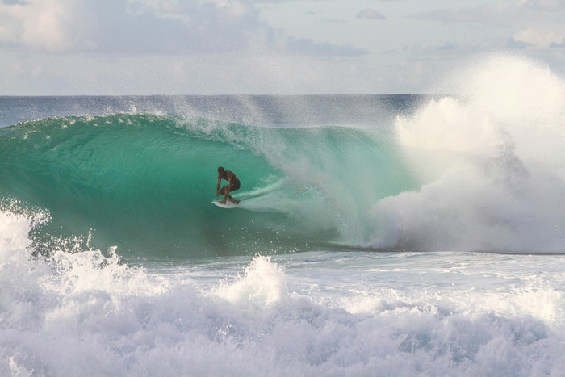

How to Cancel Your Peacock Subscription - Now That the 2024 Paris Olympics Are Over
Total Time: 2 min
What You Need: Laptop or computer
The torch in Paris has been extinguished. So too, has our need for a Peacock subscription.
As the Parisians begin to pack it in, atheletes from around the world have left us with unforgettable moments of triumph and sportsmanship. From Katie Ledecky setting a new Olympic medal record with her extraordinary performances in the pool, to the electrifying surfing competition at Teahupo'o, and the women’s gymnastics team dominating to secure another gold medal, the Games showcased the pinnacle of athletic excellence. Peacock, NBCUniversal's streaming platform, provided comprehensive coverage, making it easy to follow every gold medal victory, thrilling race, and historic moment.
Now that we have tucked away our badminton fandom for another four years, many viewers may be considering whether to continue their Peacock subscription. Whether you're looking to save money, switch to other streaming services for the upcoming NFL season, or simply no longer need the service, this guide will walk you through canceling your Peacock subscription. Additionally, we’ll explore other streaming options available, especially with the excitement of the NFL season just around the corner.
Why Cancel Your Peacock Subscription?
Peacock offered a wealth of content during the 2024 Summer Olympics, including live streams, event replays, and exclusive behind-the-scenes footage. However, with the games now over, some subscribers may find that their need for the service has diminished. Here are a few reasons you might consider canceling:
- End of Olympics Coverage: The primary attraction for many subscribers was the Olympic coverage. With the games concluded, interest in the platform may wane.
- Financial Considerations: Subscriptions can add up, and canceling services you no longer use is a good way to save money.
- Lack of Interest in Other Content: If the Olympics were your main draw, you might not find Peacock's other offerings compelling enough to continue your subscription.
How to Cancel Your Peacock Subscription
Canceling your Peacock subscription is straightforward, whether you're using a computer, mobile device, Roku, Firestick, or other streaming devices. Here's a detailed guide to ensure a smooth cancellation process.
General Cancellation Steps
To cancel your Peacock subscription, follow these general steps:
- Log into Your Peacock Account: Visit the Peacock website or open the Peacock app on your device. Sign in with your email and password.
- Navigate to Account Settings: On the website, click your profile icon in the top right corner and select "Account." On the app, go to the "Settings" or "Account" section.
- Access Subscription & Billing: In the Account settings, find "Subscription & Billing." Here, you'll see details about your current plan.
- Cancel Your Subscription: Click "Cancel Plan." You may be asked to confirm your decision. Follow the prompts to complete the process. Note: You may still have access to Peacock until the end of your billing cycle.
- Confirmation: You should receive a confirmation email from Peacock. Keep this for your records as proof of cancellation.
Canceling on Specific Devices
Roku
- Go to the Roku Home Screen: Press the Home button on your Roku remote.
- Navigate to the Peacock Channel: Highlight the Peacock app on your channel list.
- Access Channel Options: Press the * button on your remote to open the options menu.
- Select Manage Subscription: Choose "Manage Subscription" and then "Cancel Subscription."
- Confirm Cancellation: Follow the on-screen instructions to confirm the cancellation.
Amazon Firestick
- Go to the Firestick Home Screen: Use your remote to navigate to the Home screen.
- Select Apps: Go to "Your Apps & Channels" and find the Peacock app.
- Manage Subscription: Press the Options button on your remote (three horizontal lines) and select "Manage Subscription."
- Cancel Subscription: Choose "Cancel Subscription" and confirm your choice.
- Confirmation: You may receive an email confirming your cancellation.
Apple TV
- Open Settings: Go to the Settings app on your Apple TV.
- Select Users & Accounts: Choose your account and then select "Subscriptions."
- Manage Your Subscription: Find Peacock and select "Cancel Subscription."
- Confirm: Confirm your cancellation.
Alternatives to Peacock
With the Olympics over, you might be exploring other streaming options, especially with the NFL season fast approaching. Here's a look at some alternatives that offer a variety of content, including live sports:
- Hulu + Live TV: Offers live sports, news, and entertainment, including NFL games.
- ESPN+: Ideal for sports enthusiasts, offering exclusive content, live sports, and original programming.
- YouTube TV: Includes a wide range of live channels, including sports networks, for comprehensive NFL coverage.
- Paramount+: Provides access to CBS, which broadcasts NFL games, along with a range of other shows and movies.
- Sling TV: A budget-friendly option offering various packages, including sports channels.
Post-Olympics Sports Drought
As we transition from the excitement of the Olympics, sports fans have another reason to stay tuned: the upcoming NFL season. With the regular season set to kick off soon, fans are eagerly awaiting to see if last year's champions can defend their title or if a new team will rise to the occasion. Whether you're rooting for a favorite team or just love the thrill of the game, this season promises intense matchups and unforgettable moments.
For NFL coverage, services like Hulu + Live TV, YouTube TV, and ESPN+ are great choices. These platforms not only provide live game broadcasts but also offer comprehensive analysis, player stats, and more. By subscribing to one of these services, you can enjoy the entire NFL season from the comfort of your home.
Frequently Asked Questions
Who Won the Most Gold Medals at the 2024 Summer Olympics?
The standout athlete of the 2024 Paris Olympics was [Athlete's Name], who dominated the swimming events, securing multiple gold medals and breaking records. Their performance was a highlight of the games, showcasing exceptional talent and determination.
Can I Watch Olympic Highlights After Cancelling Peacock?
Even after canceling Peacock, you can still access Olympic highlights on platforms like YouTube or NBC's official website. However, full event replays and exclusive content may no longer be available without a subscription.
Are There Alternatives to Peacock for Watching Sports?
Yes, there are several alternatives for sports enthusiasts. Services like Hulu + Live TV, ESPN+, YouTube TV, and Paramount+ offer a wide range of sports content, including live games, highlights, and analysis.
Can I Resubscribe to Peacock in the Future?
Absolutely! If you decide to come back to Peacock, you can easily resubscribe by logging into your account and selecting a plan. Peacock frequently updates its content, so there may be new shows and events that interest you in the future.
Final Thoughts
The 2024 Summer Olympics in Paris were a celebration of athletic excellence and international unity. As we reflect on the incredible moments and achievements, many are also considering their next steps with Peacock. Whether you're canceling your subscription to explore other streaming services or simply taking a break, it's an easy process.
As we look forward to the NFL season, there are plenty of options to catch every touchdown and tackle. From Peacock to other streaming services, the world of sports and entertainment is at your fingertips. Happy streaming, and here's to more unforgettable moments in sports!